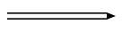
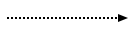
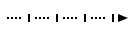

SCs language
Common
SCs-code - is a text representation of SC-code. Whole text consist of sentences, that
separated by ;; symbols.
Comments
You can use C-style comments in SCs text:
Link to files
To make an sc-link into specified file you can use special type identifier:
"file://<file name>"- is a relative path to a file. According to a file, where it used;"file:///<file_name>"- is an absolute path to a file.
Names
There are some tricks with object names:
...- is an unnamed object;_<object name>- all object names, that starts with symbol_represents a variable type of objects.
Objects identifier visibility. By default all objects with name x are visible anywhere.
After translating it into memory this object will have a system identifier equal to x.
So if you use x in different scs files, then you designate the same object in them
(would be the same element in a knowledge base).
Sometimes you need to designate the same objects in different files, but do not generate a
system identifier in memory for it. In this case you should to prefix it name with a . symbol.
For example: .x.
In case, when you need to make a named object just local for an scs file,
then you should to use .. prefix (example: ..x).
So a rule to build identifier is:
For example identifier .._x localy visible variable identifier.
Aliases
You can use alias for any sc-element by using = operator. There are some examples:
@file_alias = "file://...";;
@link_alias = [];;
@element_alias = element_idtf;;
@edge_alias = (c -> b);;
@alias_to_alias = @other_alias;;
Warning
Aliases visible just in a file scope. You should define alias before usage.
Note
SCs-code is splitted into levels. Each level allows to minimize number of string symbols to represent the same structures.
SCs level 1
SCs-code level 1 - is a simple representation of SC-code. It represents it
with just simple triples. Each triple contains subject, predicate, object
that are splitted by | symbol. Line subject | predicate | object;; is a sentence.
Identifier of subject, predicate, object build with rule:
Where type - is an element type specification. It can be one of possible values:
sc_node- equal to ;sc_link- equal to ;sc_edge_dcommon- equal to ;sc_edge_ucommon- equal to ;sc_edge_main- equal to ;
;sc_edge_access- equal to .
.
Examples
| SCg construction | Equal SCs-level 1 text |
|---|---|
|
|
|
SCs-level 1 allows you to represent any kind of SC-code construction. It's a low-level representation and commonly used as a transport format, that is very simple for parsing.
SCs level 2
This level of SCs-text add two new features:
- using of extended alphabet of edges;
- using of compound identifiers of an edges.
On this level you can make sentences by rule:
Where <edge> can be on of values:
| SCs | SCg equivalent |
|---|---|
| `<` or `>` | |
| `<>` | |
| `<..` or `..>` | |
| `<=>` |  |
| `_<=>` |  |
| `<=` or `=>` |  |
| `_<=` or `_=>` |  |
| `<-` or `->` | |
| `_<-` or `_->` |  |
| `<|-` or `-|>` | |
| `_<|-` or `_-|>` |  |
| `` |  |
| `_` |  |
| `<~` or `~>` |  |
| `_<~` or `_~>` |  |
| `<|~` or `~|>` |  |
| `_<|~` or `_~|>` |  |
| `` | |
| `_` |  |
| SCg construction | Equal SCs-level 2 text |
|---|---|
|
Compound identifier of an edge builds as a sentence in SCs-level 2, but without
;; separator and inside brackets (): (<element> <edge> <element>).
So that allows to simplify usage of an edge as a source or target of another one.
Examples
| SCg construction | Equal SCs-level 2 text |
|---|---|
|
|
|
|
|
SCs level 3
This level of SCs-text allows to minimize symbols to represent constructions like this one:
To do that you should use sentence like this:
For this example it would be like this:
In case, when output edge from c is an variable, then use :: splitter instead of ::
equal to:
:, :: just to replace -> or _-> edges.
Examples
| SCg construction | Equal SCs-level 3 text |
|---|---|
|
|
|
Note: it is possible to use any number of
:, :: in one sentence.
|
SCs level 4
This level of SCs-text allows to combine many setences with one element into one. For that pupropses used ';' symbol. So if we have some sentences like:
Then using SCs level 4 we can write them like this:
Another words, this level of SCs text, allows to use source element one time.
Examples
| SCg construction | Equal SCs-level 4 text | |
|---|---|---|
|
||
|
| SCs-level 2-4 | SCs-level 5 | Description |
|---|---|---|
|
|
This is a simple example, that allow to make an SCs-text more readable and useful. In this case text has a sublevels, that allow
to read it faster.
|
|
|
You can use as more as you need sentences in (* *), but all of them should be separated by ;;.
|
|
|
This type of syntax is very useful, when you need to specify some meta information on sc-link's.
In this example we specify two main identifiers for a sc_element. One is an english (lang_en) identifier,
another one is a russian (lang_ru).
|
| Type | Description | Example |
|---|---|---|
| `string` | You can write any string that you wish inside [ ... ] alias |
|
| `number` | You can specify a number as a binary data. To do that, just use syntax:
[^"type: value"]. Where type is a one of possible types:
|
|
sc-structure. You can use just SCs-text inside this brackets.
So these brackets will designate an sc-structure (sc-node with a type sc_node_struct). All elements inside
brackets will have ingoing edge (type sc_edge_main) from that sc-node.
| SCs-text level 2-5 | SCs-text level 6 |
|---|---|
|
|
| SCs-text level 2-5 | SCs-text level 6 | Comments |
|---|---|---|
|
|
Using set looks much cleaner. You can use even attributes on it |
|
|
You can use set alias inside any other complex aliases and triples. |
| SCs-code | Equal SCg-code |
|---|---|
a <- sc_node_class;;
a _-> _b;;
_b <- sc_node_material;;
|
|
_x => nrel_y: t;;
nrel_y <- sc_node_norole_relation;;
|